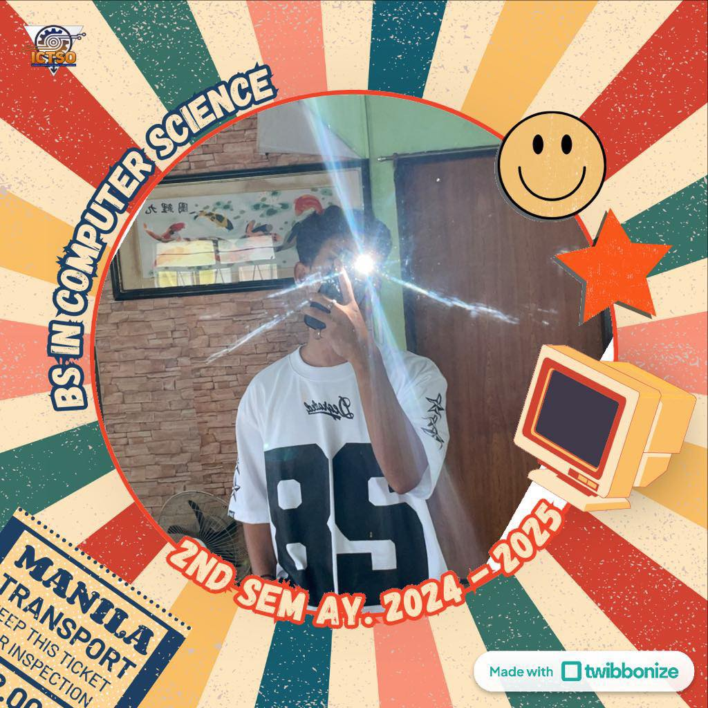
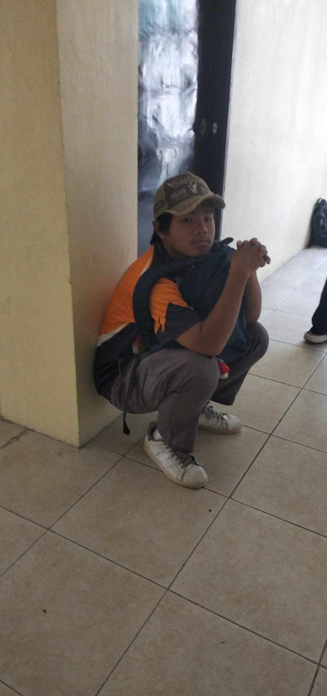
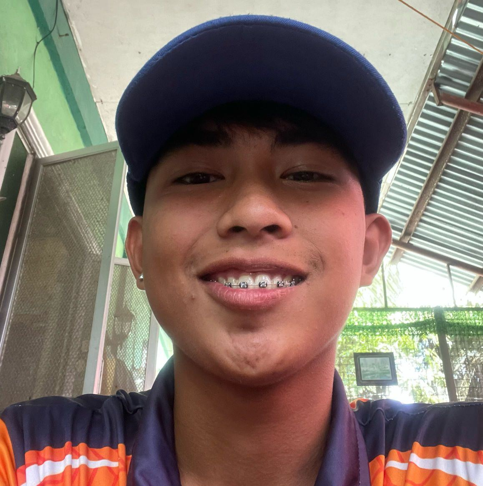

Meet the Team
The creative minds behind CvSU Naic Lost and Found

Justinn Modrigo
"GE, TO"
0993 980 0322

Carl Datan
WHOOOOOOOOOOP
0998 765 4321

Kris Jan Shingo
BOY YAWAK in da hauzz
0901 122 3344